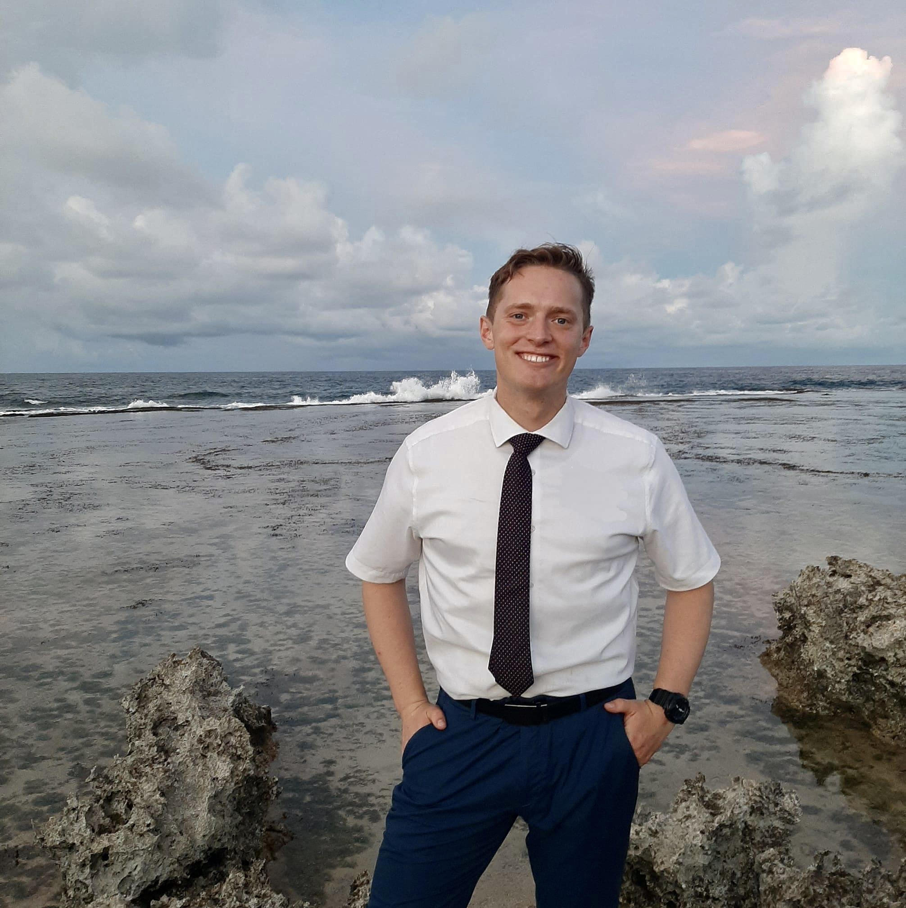

Zane Wilcox | WDD 130
Hello, my name is Zane Wilcox and I am from Utah, USA. I am a language enthusiast and love spending my time learning about other cultures by first learning their language. I am currently studying Korean through the Mongolian language.